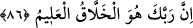

içinde büyük bir olayın vukû bulacağı kısa bir vakittir.” Şeyhzâde de der ki: “Kopma
zamanına doğru sa’yettiğinden/hızla gittiğinden dolayı kıyâmete ‘sâat’ denmiştir.
Kıyâmetin mesâfesi ise nefeslerdir.
Denmek isteniyor ki: Ey Muhammed! Kıyâmet koptuğunda, Allah seni yalanlayan
düşmanlardan intikam alacak, sana iyiliklerinin, onlara da kötülüklerinin karşılığını
verecek. Çünkü O, gökleri, yeri ve ikisi arasındakileri, bütün muhsinlerin iyiliğine ve
bütün günahkârların da günahına karşılık vermek için yaratmıştır.
“Şimdilik onlara güzel muâmele et.” Yâni, Seni yalanlayanlardan güzel bir şekilde
yüz çevir, eziyetlerine tahammül et; intikam almakta aceleci olma, hoşgörülü, yumuşak
huylu kimse gibi muâmele et. Kâşifî der ki: “Kendi nefsinin hakkını affeyle, fakat
mükâfât sadedinde olma.”
86. Şüphesiz Rabbin hakkıyla yaratan, pek iyi bilendir.
“Şüphesiz” seni kemâlin son noktasına ulaştıran “Rabbin” seni, onları ve mutlak
olarak tüm varlıkları “hakkıyla yaratan,” vifâk ve nifâk ehlini (sana uyanlarla
ikiyüzlüleri) “pek iyi bilendir.”
Kâşifî der ki: “Halâikı halk ve îcâd eden, eflâki bir üslûb üzere ve yıldızları yukarıda
yaratan, insanı, şeytanı, cinni ve kuşları var eden O’dur.”
Deryayı, sahrayı, dağı ve ovayı yaratan O’dur.
O’nun mülkü hadsiz ve O benzersizdir.
O nakşeder ve benim nakkaşım O’dur.
Başkası eğer bunları iddiâ ederse zâlimdir.
el-İrşâd’da der ki: “O, senin ve onların hallerini tüm ayrıntılarıyla bilendir. Onlarla
aranızda geçen hiçbir şey O’na gizli değildir. Dolayısıyla O, haklarında hükmetmek
bakımından bütün işlerini kendisine bırakmana lâyıktır.”
Âyette Hz. Peygamber (s.a.) insanların en güzel huylusu, en ağır ve yumuşak başlısı,
en hoşgörülüsü ve kendini en fazla dizginleyeni olduğu hâlde, yalanlayanlara karşı güzel
bir ahlâkla muhâlefet etmesi emredilmiştir.
Fudayl der ki: “Fütüvvet, ihvânın kusurlarını hoş görmektir.”
Zeynelâbidin, son derece hoşgörülü ve affedici bir kimseydi. Bir defasında adamın
biri ona ağır sözler söyledi, Önce duymazlıktan geldi. Fakat adamın ‘Ben, seni
kasdediyorum!’ demesi üzerine de: “Sen af yolunu tut, iyi olanı emret ve câhillerden
yüz çevir.” (el-A‘râf, 7/199) âyetine işâret ederek: ‘Ben de senden yüz çeviriyorum!’
dedi.